How a beach town nobody searches for became a trip you can research, book and plan on one website.
Lombok sits just east of Bali, with its own culture, landmarks and landscapes, and it is still overshadowed by its neighbour. A large part of the gap is online presence: there is little to find, so there is little reason to go.
As a local Indonesian I hear about places like Lombok through word of mouth. A tourist relying on an internet search never gets that conversation. That was the starting point: give an overlooked beach town the online presence it is missing, as the centrepiece of a wider rebrand.
They came from different backgrounds and had different travel experience. I chose interviews over a survey because I wanted detail on behaviour and pain points, not only counts.
I went through each platform and its Google Play reviews, and sorted what I found into what to borrow and what to fix.
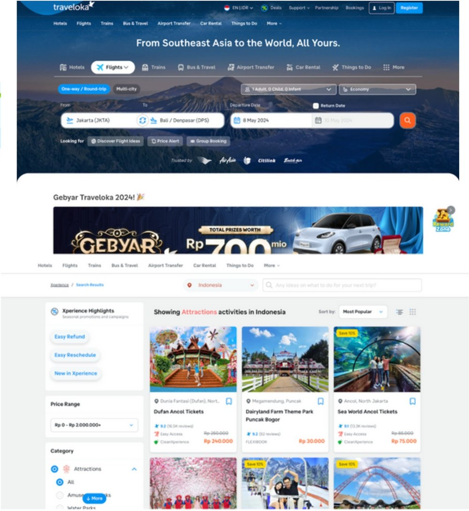
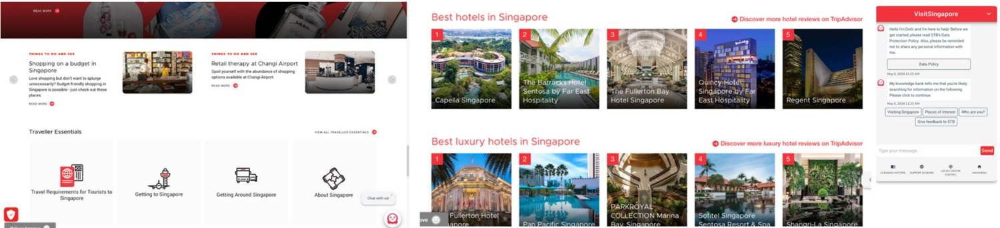
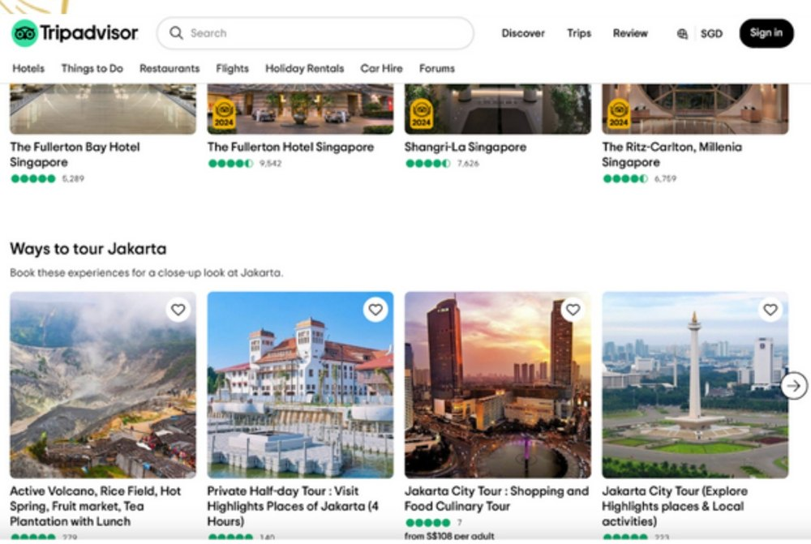
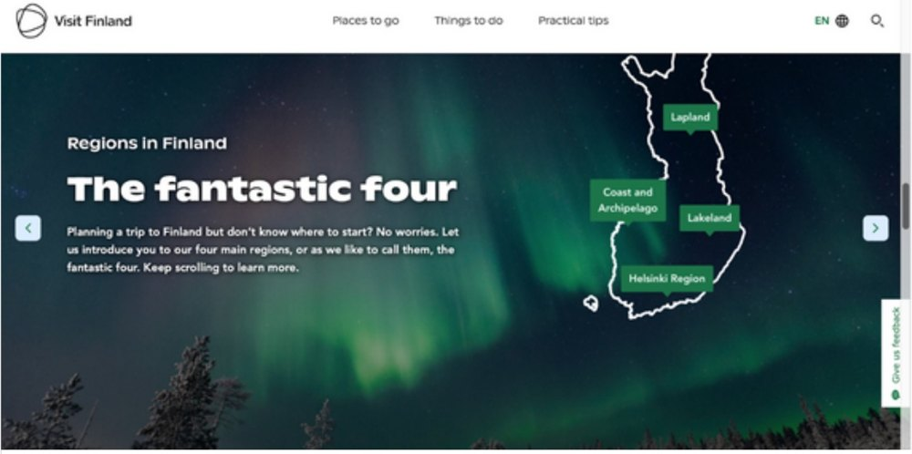
Planning, booking, preparing and the travel itself.
Interviewees complained about complex navigation, so I sorted every feature into a flow before drawing a screen.
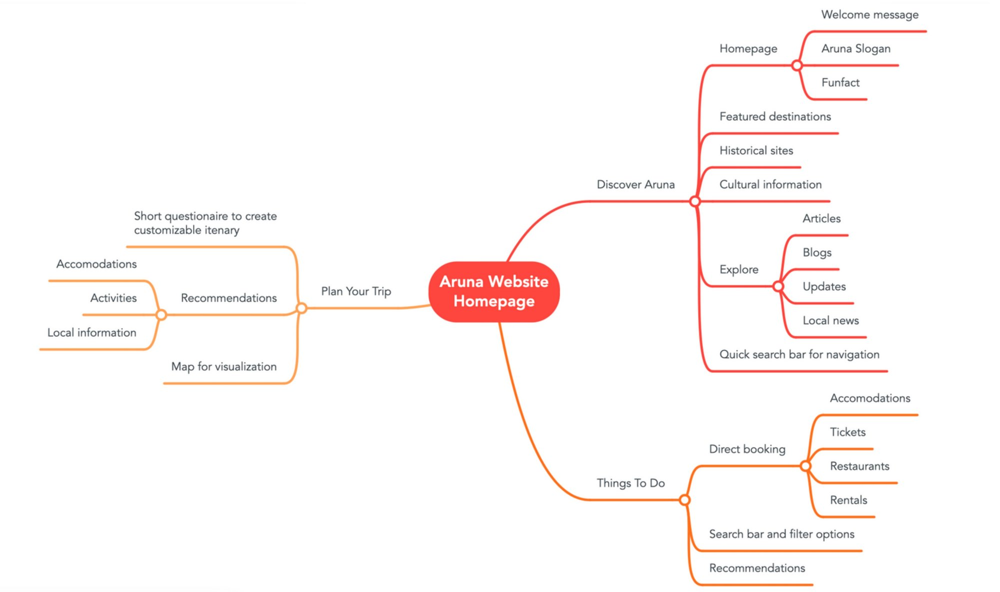
"Aruna" comes from Sanskrit: the reddish glow of the rising sun. It stands for new beginnings, and it gave the slogan, Where Every Sunrise is a New Adventure.
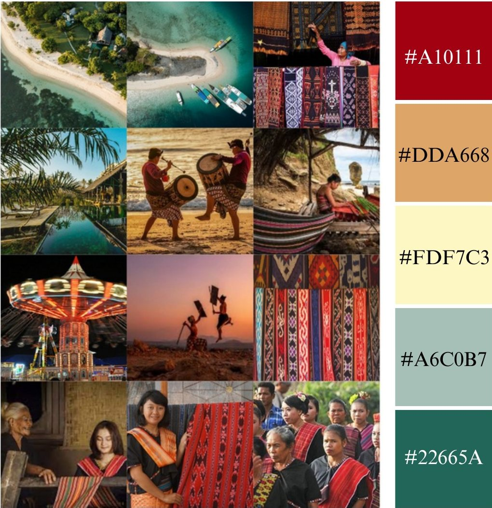
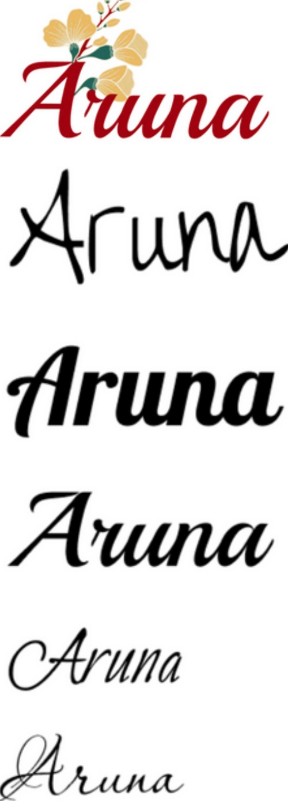
I tried the name in several script typefaces. All were elegant, but Playball kept the best balance of elegance and readability, so the mark stays recognisable. Floral elements add natural beauty and a sense of renewal.
People scan, so the first screen holds three things: the slogan, one random fun fact about the town (an idea from Visit Finland) and a search bar for quick access.
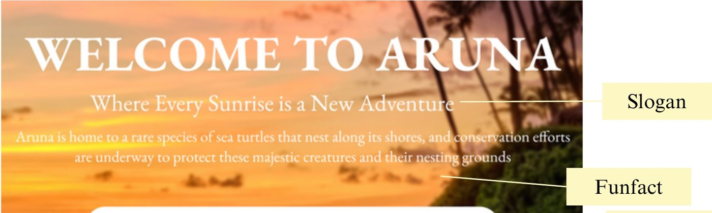
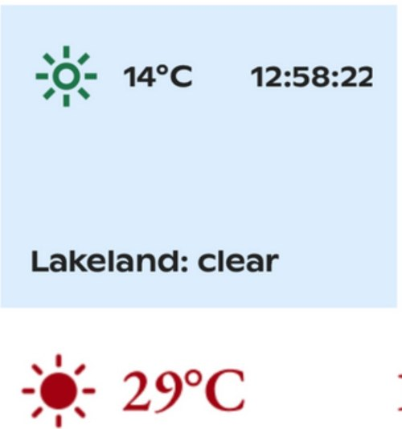
Visit Finland shows local weather and time. Aruna does the same on its homepage, top: their widget, bottom: mine, so visitors know the conditions before they plan.
Discounts are the first thing people notice on a travel site, so Best Deals leads the page, with large photos because photos drive decisions. Cards carry reviews for credibility, a Book Now button and a favourite, which closes the gap the tourism-board sites left open.
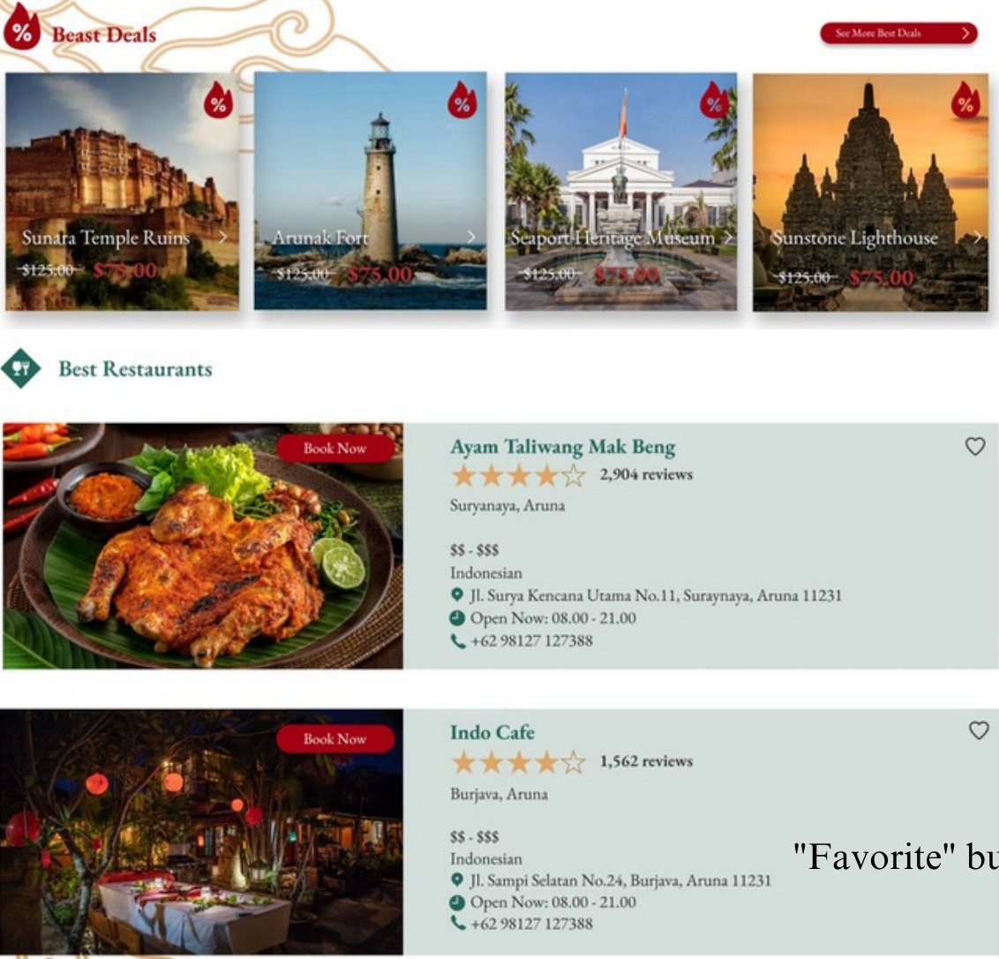
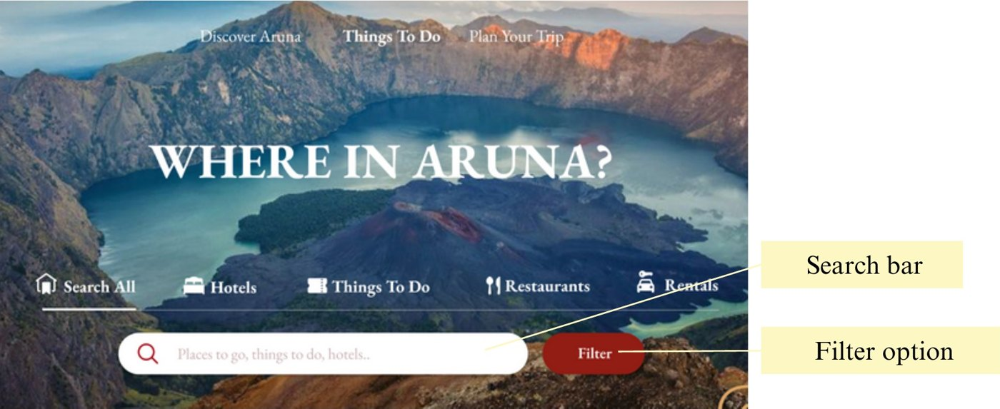
Interviewees wanted places based on where they are. The page opens on the most searched categories, a search bar and a filter, plus "Explore activities in your location" for nearby places and essentials such as supermarkets, laundry and gas stations.
Inspired by Tripadvisor's itinerary feature. Visitors answer a short questionnaire on dates, budget, group size, activities and accommodation, and get a day-by-day itinerary with required documents, weather and places to stay. Saved favourites can be added in.
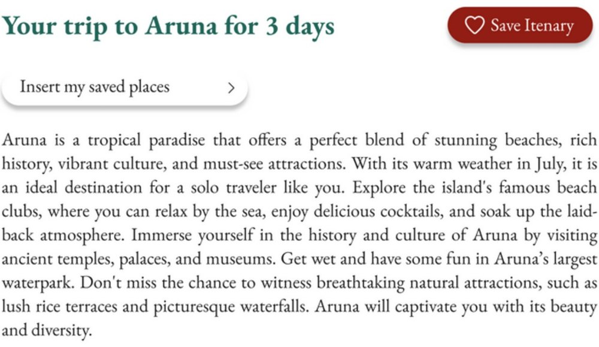
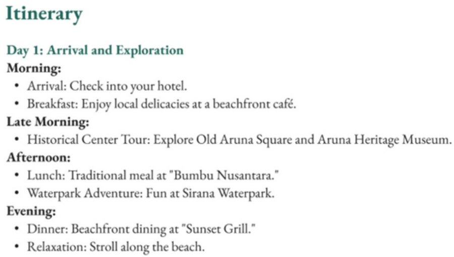
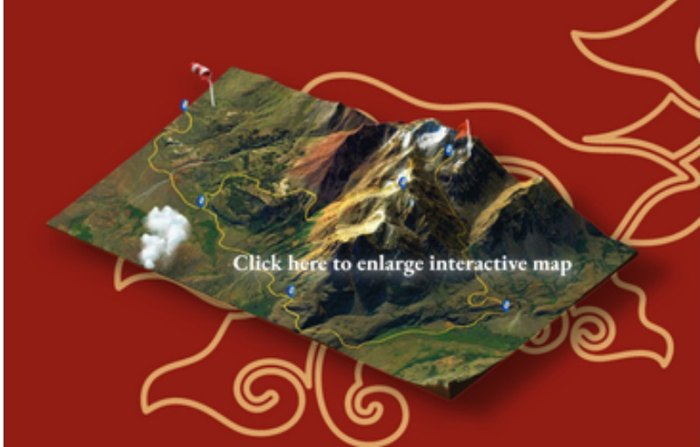
A 3D interactive map lets visitors click any location for details, photos and reviews. An AI chatbot answers questions in real time, and because reviews of other apps asked for human support, every footer carries a hotline and a feedback link.
Hover each screen to scroll it, or open the prototype to click through.
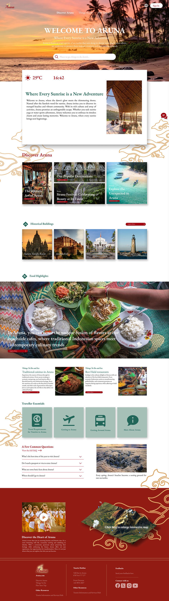
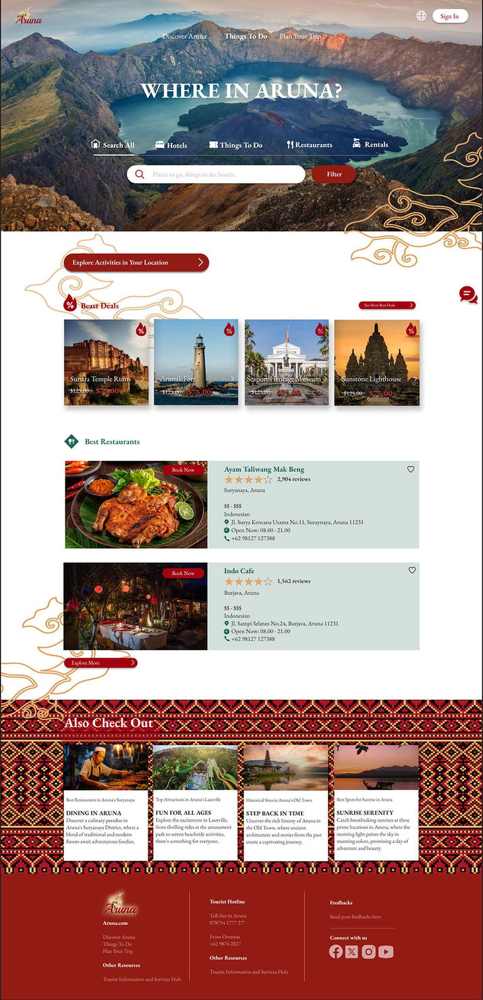
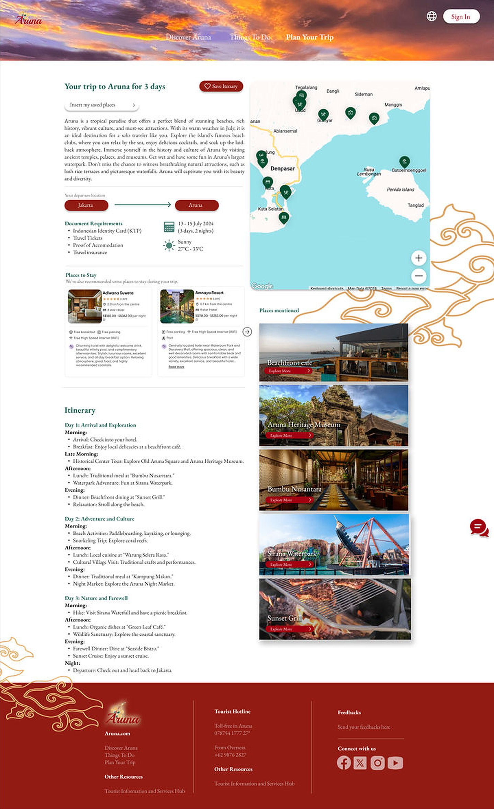